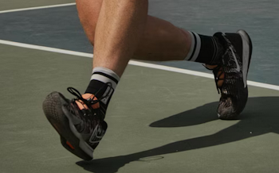
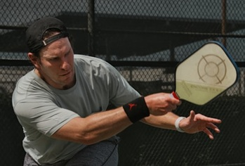
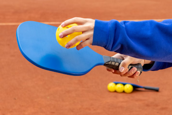
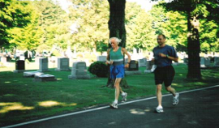

Blog
A Good Game Starts from the Ground Up
November 9th, 2025
I have had the pleasure of introducing people to pickleball over the last few years and I always make a point to stress the importance of proper footwear and safety glasses/goggles.
When it comes to footwear it's important to ensure that you're wearing the right type of shoe for whatever activity you participate in. For running you want running shoes - for pickleball you want court shoes - there is a difference. Court shoes have more support on the sides giving more protection with the side to side movement.
If you're going to play once a month and are not playing with intensity you may very well get by with running shoes when playing pickleball. For the majority of people it's well worth investing in a pair of good quality court shoes (or perhaps 2 pairs). I say 2 pairs because they make indoor, outdoor, and indoor/outdoor shoes. I personally buy indoor and outdoor shoes (because I play indoor and outdoor pickleball). I once bought a pair of indoor/outdoor shoes and I found that they wore out quickly when wearing them outdoor.
Proper footwear can help protect you from injury. I competed in races for 13 years and always wore good running shoes and followed the recommendation as to when to get a new pair (every 300 to 500 miles). Only once in that time did I start feeling some knee pain - that's when I realized that I had over 500 miles on that pair and as soon as I bought a new pair the knee pain went away. Had I not listened to my body it could have led to requiring a long layoff from racing.
So what I'm saying is that not only is proper footwear important but also knowing when it's time to invest in a new pair! Minimizing the risk of injury and staying in good health is important - you owe yourself that!
My opinion only.
Pierre (Pete)
Is power really that important?
October 11th, 2025
It depends on how you define power. In my opinion, banging balls back and forth may feel like power, but there is so much more to the game. It's important to learn precision and ball placement and not just hitting the ball hard. A lob deep in the court, a well- placed cross court dink or a top spin flick down the centre line beats power … especially when the power isn't controlled and the ball ends up in the net or outside the court.
When we are learning to play, we tend to stay at the back of the court, smashing and banging the ball back and forth. I will admit, it is fun to drive the ball. So I get it. But as you advance, you discover that banging the ball isn't enough as your opponents WILL return the ball. And keep in mind, the harder you hit the ball, the harder it returns. Sooo….. if you use power against a banger, you have to be ready. Trust me, I've taken a few balls to the body because I wasn't.
So how do you outplay bangers? One way is to soften the game. When you are at the back of the court, try a drop shot. Aim for the kitchen. You want the ball to drop so that they cannot take it out of the air. Plus, a drop shot gives you the time to get to the kitchen which is a power move as you move from a defense position to offense. Another shot to try is the reset. This is typically done when you are closer to the net and you tap the ball into the kitchen, aim for their feet, it's a great power move. A third power move to beat a banger is the lob shot. The lob is most effective when you're all at the kitchen, your opponent is leaning forward to volley the ball and you lob it over their head. This puts them into defense mode as they run for the ball, and you maintain offense at the kitchen line.
Being powerful in the game, isn't just about hitting the ball with lots of force, it's about playing smart and being strategic. Once you learn and practice the soft game, the precision of your shot, the placement of your balls, adding spin, flicks, punches … then, in my opinion, you can add more power to your shots.
Rhonda
You Were Once a Newbie - Remember?
September 8th, 2025
Do you remember when you were a pickleball newbie? Do you recall being ignored by more experienced players and feeling unwelcomed? I am certain it happened to you. Think back to how that felt.
Everyone wants to play competitively but we should not forget that we were newbies at one time. Hopefully you had some people treat you with respect along your journey to offset those that did not.
Now that you are a more experienced player I beg you to help those who are less skilled than you instead of ignoring them, trying to avoid playing with them or rolling your eyes. Use it as an opportunity to teach. I promise you will feel good about having made someone's development in the sport that you and I love a little more pleasurable. They will thank you for your patience and commitment and you will feel good about having made someone's day.
My opinion only.
Pierre (Pete)
Unconventional Ed
August 3rd, 2025
I ran many races over a 13 year period and had many memorable experiences. The highlight however was meeting Ed Whitlock who held many world records and who ran the full marathon 3 times in under 3 hours in his 70's - That is INSANE!
According to almost every source out there to properly train for a race (especially a long race) you need to vary your running by doing speed workouts, tempo runs, long runs, and other types. Ed did none of that. His training involved doing a slow run almost every day in a cemetery for three hours. Very unconventional.
What does this have to do with pickleball ? In running and other sports (pickleball included) there are best practices and standards you are told you should follow and I do not disagree with following what the experts say. I am reminded when I think of Ed that sometimes you may be doing something that does not follow recommendations but it works for you. In that case it is my opinion that it is not wrong and you do not necessarily have to change your quirky ways.
My opinion only.
Pierre (Pete)